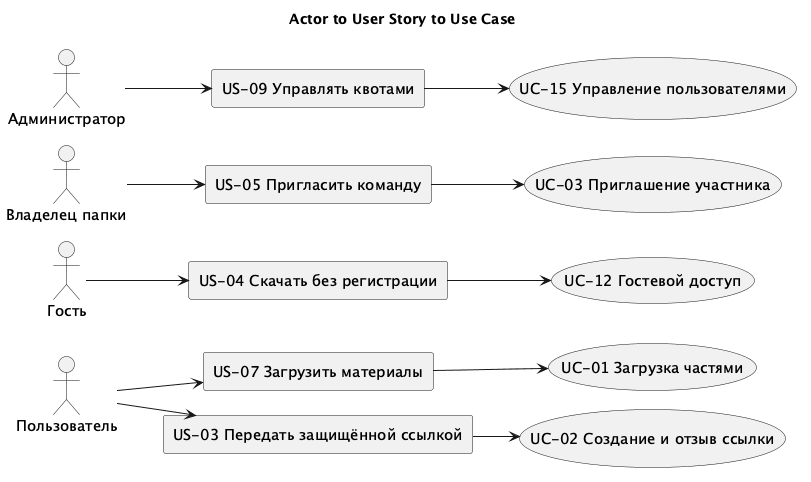
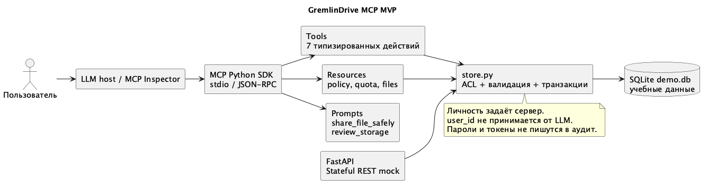
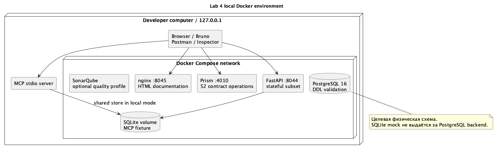
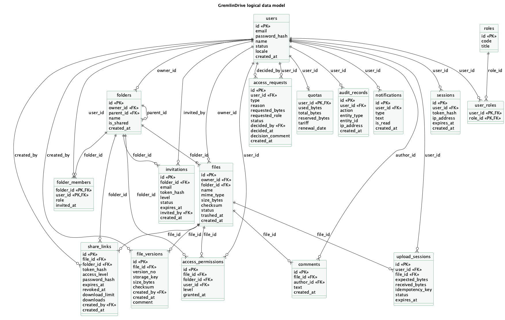
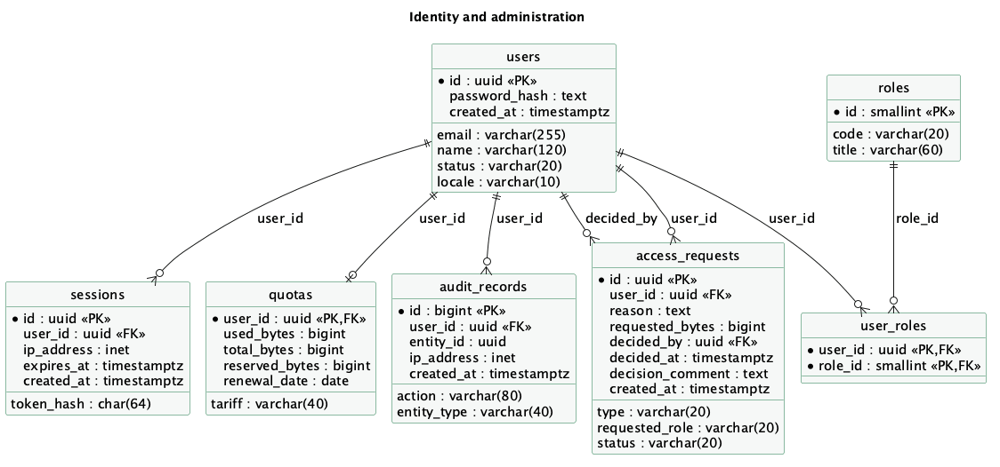
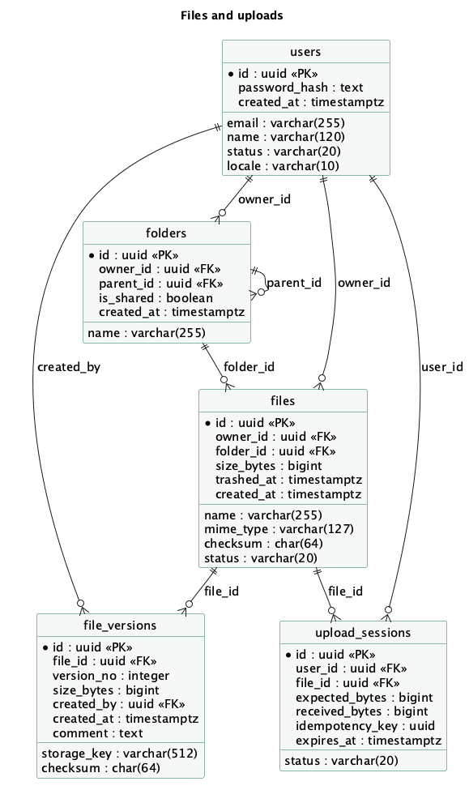
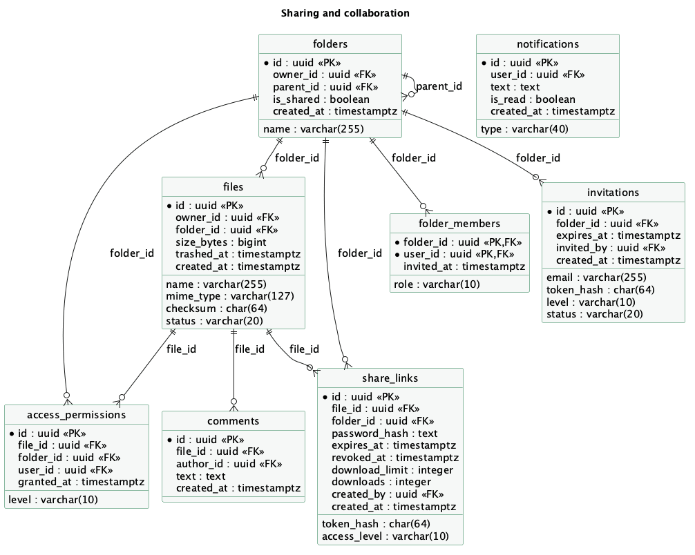

Лабораторная работа 4 · группа 10а
API и интеграция
с AI-ассистентом
GremlinDrive: от требований и схемы данных к проверяемому API и работающему MCP-серверу.
Проверки
В Bruno прошли 52 запроса и 52 теста. Контракт отдельно проверен по схемам ответов. Pytest выполнил 22 теста, покрытие REST mock и доменной логики составляет 87,50%. PostgreSQL прошёл восемь проверок ограничений. MCP проверен по stdio и через официальный Inspector.
Prism симулирует весь контракт. Stateful mock реализует 21 операцию с SQLite. Поле x-implementation в OpenAPI показывает границу между ними.
Модель требований и реестр вариантов использования
Входной материал - SRS и User Stories лабораторной работы 3. Идентификаторы US-01–US-16, FR-01–FR-30 и UC-01–UC-05 сохранены. Первые пять UC описывают загрузку, ссылку, приглашение, восстановление версии и запрос прав или квоты. Для ЛР4 добавлены UC-06–UC-19 и связь с HTTP-операциями.
Действующее лицо задаёт цель через пользовательскую историю, вариант использования описывает действия и результат, а конечная точка предоставляет серверный контракт. Полная трассировка хранится в traceability.json.

| ID | Действующее лицо | User Story | Вариант использования | Результат |
|---|---|---|---|---|
| UC-01 | Пользователь | US-07 | Загрузка файла частями | После завершения создана версия и начата проверка |
| UC-02 | Пользователь | US-03, US-16 | Создание, просмотр и отзыв ссылок | Управляемый доступ к активному файлу |
| UC-03 | Владелец папки | US-05 | Приглашение и принятие приглашения | Участник добавлен с выбранной ролью |
| UC-04 | Участник папки | US-06 | Просмотр и восстановление версий | Восстановление создаёт следующую версию |
| UC-05 | Пользователь и администратор | US-10, US-15 | Запрос и решение по квоте | Решение применяется однократно в транзакции |
| UC-06 | Гость | US-01 | Регистрация и подтверждение e-mail | Аккаунт активирован после проверки адреса |
| UC-07 | Пользователь | US-02 | Вход, выход и восстановление доступа | Сессия выдана или отозвана |
| UC-08 | Пользователь | US-12 | Настройка и проверка TOTP | Вход требует второй фактор |
| UC-09 | Пользователь | US-07 | Работа с файлами и папками | Создана папка или изменено имя файла |
| UC-10 | Пользователь | US-06, US-07 | Поиск, метаданные и скачивание | Возвращены только доступные объекты |
| UC-11 | Пользователь | US-11 | Корзина и восстановление | Файл восстановлен без активации старых ссылок |
| UC-12 | Гость | US-04 | Открытие ссылки и скачивание | Пароль, срок и уровень доступа проверены |
| UC-13 | Владелец папки | US-05 | Изменение роли и удаление участника | Новые права применены при следующем запросе |
| UC-14 | Участник папки | US-13 | Комментарии и уведомления | Комментарий сохранён, уведомление доступно адресату |
| UC-15 | Администратор | US-09 | Пользователи, роли и квоты | Изменение проверено и записано в аудит |
| UC-16 | Администратор | US-14 | Аудит и экспорт отчётов | Получен журнал или задача формирования отчёта |
| UC-17 | Мобильный пользователь | US-07, US-08 | Push, фоновая загрузка и синхронизация | Клиент получил изменения после восстановления сети |
| UC-18 | Администратор | US-09 | Запуск синхронизации LDAP | Сформирован результат синхронизации каталога |
| UC-19 | Разработчик | US-09 | Проверка окружения | Получен статус работоспособности mock-сервиса |
Уточнения требований для API
API-01. Каждый защищённый запрос устанавливает пользователя по сессии. Идентификатор пользователя из тела запроса не меняет действующее лицо. Право администратора не даёт права читать содержимое личных файлов.
API-02. Ссылка не раскрывает метаданные до проверки пароля. После пяти неверных попыток доступ к этой ссылке блокируется на 15 минут, как предусмотрено US-03. Срок по умолчанию 14 дней, null задаёт бессрочную ссылку. При истечении срока или отзыве возвращается нейтральная ошибка.
API-03. Перенос в корзину отзывает ссылки. Восстановление файла не публикует его повторно. Карантин запрещает публикацию.
API-04. Завершение загрузки идемпотентно по ключу операции. Квота резервируется до передачи данных, а занятый объём меняется в транзакции. Эти операции описаны контрактом; передачу бинарных частей в stateful mock заменяют ответы Prism.
API-05. Выбор версии при восстановлении создаёт новую версию, не переписывая старую. Параллельная запись контролируется версией объекта или If-Match.
API-06. Клиент получает коды 401, 403, 404, 409, 422 и 429 с понятной причиной. Пароли, хеши и токены не попадают в обычные ответы списка и журнал аудита.
API-07. Тёмная тема, биометрия и офлайн-кэш относятся к клиенту. Сервер предоставляет сессию, метаданные, контент и синхронизацию; биометрические данные на сервер не отправляются. FR-28 проверяется при реализации интерфейса, а не отдельным endpoint.
Подробные сценарии
UC-02 Передача файла по ссылке
Предусловие: пользователь вошёл, файл активен, у пользователя есть право редактирования. Клиент отправляет file_id, access_level, пароль и срок. Сервер проверяет права и состояние файла, создаёт случайный токен, сохраняет его хеш и хеш пароля, затем возвращает 201 с URL и датой окончания. Повторно секретный токен в списке ссылок не показывается. При недостаточных правах возвращается 403, при корзине или карантине - 409, при коротком пароле - 422. Отзыв ссылки изменяет её состояние и записывается в аудит.
UC-12 Открытие гостевой ссылки
Предусловие: гость получил URL. Клиент отправляет пароль в POST access. После проверки сервер выдаёт краткоживущий токен доступа и метаданные. Скачивание требует этот токен и уровень download. При view скачивание отклоняется с 403. При неверном пароле возвращается 401, после пяти ошибок - 429. Истёкшая или отозванная ссылка возвращает 404 без имени файла.
UC-01 Загрузка файла частями
Пользователь выбирает файл и папку. Клиент создаёт upload session с размером и ключом идемпотентности, получает id и передаёт части по номеру. После обрыва запрашивается принятый объём. Завершение сверяет размер и checksum, фиксирует версию и отправляет задачу на проверку. Недостаток квоты даёт 507, неверная контрольная сумма - 409. Состояние остаётся pending до успешной проверки.
UC-05 Решение по запросу квоты
Пользователь отправляет обоснование и требуемый объём. Администратор открывает очередь, выбирает запрос и указывает новую квоту либо причину отказа. Сервер блокирует запись запроса, проверяет pending, меняет квоту и сохраняет решение одной транзакцией. Повторное решение даёт 409. Уменьшение ниже занятого объёма запрещено.
UC-11 Восстановление из корзины
Пользователь выбирает собственный файл в корзине и вызывает POST restorations. Сервер проверяет право записи и состояние, переводит файл в active и записывает событие. Ранее отозванные ссылки остаются недействительными. Попытка восстановить активный файл даёт 409.
Логическая схема базы данных
Модель продолжает 16 сущностей ЛР3. Добавлена upload_sessions для загрузки частями и идемпотентного завершения. Содержимое файлов хранится в S3, в таблицах остаются метаданные.
users
id (PK), email, password_hash, name, status, locale, created_at.
roles
id (PK), code, title.
user_roles
user_id (PK,FK), role_id (PK,FK).
sessions
id (PK), user_id (FK), token_hash, ip_address, expires_at, created_at.
folders
id (PK), owner_id (FK), parent_id (FK), name, is_shared, created_at.
files
id (PK), owner_id (FK), folder_id (FK), name, mime_type, size_bytes, checksum, status, trashed_at, created_at.
file_versions
id (PK), file_id (FK), version_no, storage_key, size_bytes, checksum, created_by (FK), created_at, comment.
share_links
id (PK), file_id (FK), folder_id (FK), token_hash, access_level, password_hash, expires_at, revoked_at, download_limit, downloads, created_by (FK), created_at.
access_permissions
id (PK), file_id (FK), folder_id (FK), user_id (FK), level, granted_at.
folder_members
folder_id (PK,FK), user_id (PK,FK), role, invited_at.
invitations
id (PK), folder_id (FK), email, token_hash, level, status, expires_at, invited_by (FK), created_at.
access_requests
id (PK), user_id (FK), type, reason, requested_bytes, requested_role, status, decided_by (FK), decided_at, decision_comment, created_at.
quotas
user_id (PK,FK), used_bytes, total_bytes, reserved_bytes, tariff, renewal_date.
audit_records
id (PK), user_id (FK), action, entity_type, entity_id, ip_address, created_at.
notifications
id (PK), user_id (FK), type, text, is_read, created_at.
comments
id (PK), file_id (FK), author_id (FK), text, created_at.
upload_sessions
id (PK), user_id (FK), file_id (FK), expected_bytes, received_bytes, idempotency_key, status, expires_at.
Связи
files.id → access_permissions.file_id (1:N).
files.id → comments.file_id (1:N).
files.id → file_versions.file_id (1:N).
files.id → share_links.file_id (1:N).
files.id → upload_sessions.file_id (1:N).
folders.id → access_permissions.folder_id (1:N).
folders.id → files.folder_id (1:N).
folders.id → folder_members.folder_id (1:N).
folders.id → folders.parent_id (1:N).
folders.id → invitations.folder_id (1:N).
folders.id → share_links.folder_id (1:N).
roles.id → user_roles.role_id (1:N).
users.id → access_permissions.user_id (1:N).
users.id → access_requests.decided_by (1:N).
users.id → access_requests.user_id (1:N).
users.id → audit_records.user_id (1:N).
users.id → comments.author_id (1:N).
users.id → file_versions.created_by (1:N).
users.id → files.owner_id (1:N).
users.id → folder_members.user_id (1:N).
users.id → folders.owner_id (1:N).
users.id → invitations.invited_by (1:N).
users.id → notifications.user_id (1:N).
users.id → quotas.user_id (1:0..1).
users.id → sessions.user_id (1:N).
users.id → share_links.created_by (1:N).
users.id → upload_sessions.user_id (1:N).
users.id → user_roles.user_id (1:N).
Маршруты и конечные точки API
Базовый путь - /api/v1. Спецификация OpenAPI 3.1 хранится в openapi.json. HTTP-методы отражают работу с ресурсом: GET читает, POST создаёт ресурс или объект операции, PUT заменяет настройки, PATCH меняет отдельные поля, DELETE отзывает доступ или перемещает файл в корзину.
Для взаимодействия веб- и мобильного клиента выбран REST/JSON через HTTPS. Прямой доступ клиентов к общей БД связывал бы их со схемой и обходил бы проверки прав. Обмен файлами остаётся пользовательской функцией, а не способом синхронизации серверных таблиц. Длительные задачи загрузки, проверки и уведомлений в целевой архитектуре передаются worker через очередь Redis; для LLM предусмотрен MCP-адаптер.
Коллекции файлов поддерживают q, status, limit от 1 до 100 и offset. UUID передаются строками. Размер хранится в байтах. Временные метки в mock представлены Unix seconds; целевой контракт должен сохранять согласованное представление времени во всех клиентах.
Для лабораторной есть два разных сервиса. Prism на порту 4010 симулирует весь контракт из 52 операций. FastAPI на порту 8044 реализует 21 операцию с состоянием SQLite. Поле x-implementation в спецификации показывает границу. Промышленная регистрация, TOTP, передача частей файла, LDAP и push в этот прототип не входят.
| Метод | Маршрут | UC | Источник | Проверка |
|---|---|---|---|---|
| GET | /health | UC-19 | FR-30 | stateful-mock |
| GET | /api/v1/me | UC-07 | FR-02,FR-30 | stateful-mock |
| GET | /api/v1/me/quota | UC-05 | FR-18 | stateful-mock |
| GET | /api/v1/files | UC-10 | FR-09 | stateful-mock |
| GET | /api/v1/files/{file_id} | UC-10 | FR-08 | stateful-mock |
| PATCH | /api/v1/files/{file_id} | UC-09 | FR-05 | stateful-mock |
| DELETE | /api/v1/files/{file_id} | UC-11 | FR-10 | stateful-mock |
| POST | /api/v1/files/{file_id}/restorations | UC-11 | FR-10 | stateful-mock |
| GET | /api/v1/files/{file_id}/versions | UC-04 | FR-11 | stateful-mock |
| GET | /api/v1/folders | UC-09 | FR-05 | stateful-mock |
| POST | /api/v1/folders | UC-09 | FR-05 | stateful-mock |
| GET | /api/v1/share-links | UC-02 | FR-14 | stateful-mock |
| POST | /api/v1/share-links | UC-02 | FR-12 | stateful-mock |
| DELETE | /api/v1/share-links/{share_id} | UC-02 | FR-14 | stateful-mock |
| POST | /api/v1/public/shares/{token}/access | UC-12 | FR-13 | stateful-mock |
| GET | /api/v1/public/shares/{token}/content | UC-12 | FR-13 | stateful-mock |
| POST | /api/v1/access-requests | UC-05 | FR-18 | stateful-mock |
| GET | /api/v1/admin/access-requests | UC-05 | FR-19 | stateful-mock |
| POST | /api/v1/admin/access-requests/{request_id}/decisions | UC-05 | FR-19 | stateful-mock |
| PUT | /api/v1/admin/users/{user_id}/quota | UC-15 | FR-21 | stateful-mock |
| GET | /api/v1/admin/audit-records | UC-16 | FR-23 | stateful-mock |
| POST | /api/v1/auth/registrations | UC-06 | FR-01 | contract-mock |
| POST | /api/v1/auth/email-confirmations | UC-06 | FR-01 | contract-mock |
| POST | /api/v1/auth/sessions | UC-07 | FR-02,FR-04 | contract-mock |
| DELETE | /api/v1/auth/sessions/current | UC-07 | FR-02 | contract-mock |
| POST | /api/v1/auth/password-resets | UC-07 | FR-02 | contract-mock |
| POST | /api/v1/auth/totp/enrollments | UC-08 | FR-03 | contract-mock |
| POST | /api/v1/auth/totp/verifications | UC-08 | FR-03 | contract-mock |
| POST | /api/v1/uploads | UC-01 | FR-06,FR-27 | contract-mock |
| GET | /api/v1/uploads/{upload_id} | UC-01 | FR-06 | contract-mock |
| DELETE | /api/v1/uploads/{upload_id} | UC-01 | FR-06 | contract-mock |
| PUT | /api/v1/uploads/{upload_id}/parts/{part_no} | UC-01 | FR-06 | contract-mock |
| POST | /api/v1/uploads/{upload_id}/completions | UC-01 | FR-06,FR-07 | contract-mock |
| GET | /api/v1/files/{file_id}/content | UC-10 | FR-08,FR-26 | contract-mock |
| GET | /api/v1/files/{file_id}/previews | UC-10 | FR-08 | contract-mock |
| POST | /api/v1/files/{file_id}/version-restorations | UC-04 | FR-11 | contract-mock |
| POST | /api/v1/folders/{folder_id}/invitations | UC-03 | FR-15 | contract-mock |
| POST | /api/v1/invitations/{invitation_id}/acceptances | UC-03 | FR-15 | contract-mock |
| GET | /api/v1/folders/{folder_id}/members | UC-13 | FR-16 | contract-mock |
| PUT | /api/v1/folders/{folder_id}/members/{user_id} | UC-13 | FR-16 | contract-mock |
| DELETE | /api/v1/folders/{folder_id}/members/{user_id} | UC-13 | FR-16 | contract-mock |
| GET | /api/v1/files/{file_id}/comments | UC-14 | FR-17 | contract-mock |
| POST | /api/v1/files/{file_id}/comments | UC-14 | FR-17 | contract-mock |
| GET | /api/v1/notifications | UC-14 | FR-25 | contract-mock |
| PATCH | /api/v1/notifications/{notification_id} | UC-14 | FR-25 | contract-mock |
| POST | /api/v1/devices | UC-17 | FR-25,FR-27 | contract-mock |
| GET | /api/v1/sync/changes | UC-17 | FR-26 | contract-mock |
| GET | /api/v1/admin/users | UC-15 | FR-20 | contract-mock |
| PATCH | /api/v1/admin/users/{user_id} | UC-15 | FR-20 | contract-mock |
| PUT | /api/v1/admin/users/{user_id}/roles | UC-15 | FR-21 | contract-mock |
| POST | /api/v1/admin/ldap-synchronizations | UC-18 | FR-22 | contract-mock |
| POST | /api/v1/admin/reports | UC-16 | FR-23,FR-24,FR-29 | contract-mock |
Пример запроса
POST /api/v1/share-links HTTP/1.1
Authorization: Bearer lab-owner-token
Content-Type: application/json
{
"file_id": "20000000-0000-4000-8000-000000000001",
"password": "laboratory123",
"expires_in_days": 7,
"access_level": "download"
}Успешный ответ имеет статус 201 и содержит id, file_id, token, url, expires_at и access_level. Пароль в ответ не включается.
Коды ответов
| Код | Значение |
|---|---|
| 200 | Чтение или изменение выполнено |
| 201 | Создан ресурс или результат операции |
| 401 | Нет действующей сессии либо неверен пароль ссылки |
| 403 | Пользователь определён, но действие ему не разрешено |
| 404 | Объект не найден или публичная ссылка недействительна |
| 409 | Конфликт состояния, повторное решение или неподходящая квота |
| 413 | Часть файла превышает допустимый размер |
| 422 | Запрос не соответствует схеме |
| 429 | Превышен лимит попыток проверки пароля |
| 507 | Не хватает квоты для загрузки |
Все POST, PUT и PATCH с данными имеют схему тела и пример. POST restorations без тела создаёт операцию восстановления. Для списка и деталей заданы схемы ответов.
MCP сервер GremlinDrive
Сервер позволяет ассистенту находить доступные файлы, читать метаданные, создавать папки и защищённые ссылки, отзывать ссылки и работать с корзиной. Используется официальный MCP Python SDK 1.30.0 и транспорт stdio. Учебная база SQLite общая с REST mock при одинаковом GREMLIN_DB.
Запуск
cd docs/labs/lab4/runtime
python3.12 -m venv .venv
.venv/bin/pip install -r requirements.txt
GREMLIN_USER_ID=00000000-0000-4000-8000-000000000001 .venv/bin/python mcp_server.pyВывод stdout занят JSON-RPC. Диагностика направляется в stderr. В обычном терминале сервер ожидает клиента; для проверки используется Inspector.
MCP_AUTO_OPEN_ENABLED=false npx --yes @modelcontextprotocol/inspector --cli .venv/bin/python mcp_server.py --method tools/list
.venv/bin/python test_mcp.pyАрхитектура

Личность пользователя задаёт окружение процесса GREMLIN_USER_ID. Инструменты не принимают user_id от LLM. Каждое действие проходит проверки доступа в store.py. Пользователь с ролью просмотра не может создать ссылку или удалить файл. SQLite содержит только демонстрационные записи и не заменяет промышленную PostgreSQL-схему.
Tools
| Инструмент | Параметры | Результат и ограничения |
|---|---|---|
| list_files | query, limit 1–100 | Доступные активные файлы |
| get_file | file_id UUID | Метаданные с проверкой ACL |
| create_folder | name, parent_id UUID или null | Новая папка; нужна запись в родительскую |
| create_share_link | file_id UUID, password от 8 символов, expires_in_days 1–30 или null (по умолчанию 14), access_level view/download | Ссылка на активный файл |
| revoke_share_link | share_id UUID | Отзыв при праве записи на файл |
| trash_file | file_id UUID, confirm=true | Корзина и отзыв ссылок |
| restore_file | file_id UUID | Возврат из корзины без публикации старых ссылок |
Полные JSON-схемы inputSchema и outputSchema получены через tools/list, а не написаны вручную: evidence/mcp-protocol.json и evidence/inspector-tools.json. Некорректный UUID и confirm=false отклоняются до выполнения действия.
Resources
Статические адреса gremlin://policy, gremlin://quota и gremlin://files/recent дают правила, текущую квоту и список доступных файлов. В MVP recent возвращает первые 20 файлов, отсортированных по имени; сортировка по времени добавляется при подключении PostgreSQL. Шаблон gremlin://files/{file_id} предоставляет метаданные конкретного файла с проверкой доступа.
Prompts
share_file_safely(filename) задаёт последовательность: прочитать правила, найти файл, уточнить выбор, получить пароль и срок, создать ссылку. review_storage читает квоту и доступные файлы, после чего предлагает варианты очистки. Промпт не выдаёт полномочий: проверки в сервисе выполняются независимо от текста запроса.
Пример запроса пользователя: «Найди Лабораторная.txt и подготовь ссылку на семь дней с паролем». Ассистент получает UUID через list_files и уточняет параметры до create_share_link. Другой пример: «Покажи занятую квоту и предложи, что убрать в корзину». Здесь чтение выполняется сразу, а перенос требует выбранных file_id и confirm=true.
Подключение к клиенту
В конфигурации MCP клиента указываются command с абсолютным путём к .venv/bin/python, args с абсолютным путём к mcp_server.py и env с GREMLIN_DB и GREMLIN_USER_ID. Шаблон находится в mcp-client.example.json. Реальные секреты и абсолютные пути пользователя в репозиторий не сохраняются.
Проверка
test_mcp.py подключается как настоящий MCP-клиент по stdio, выполняет initialize, discovery, читает ресурсы и шаблон, получает оба промпта и вызывает все инструменты. Дополнительно проверяются отказ публикации для читателя, неверный UUID и отсутствие подтверждения. Официальный Inspector отдельно выполняет tools/list. Протоколы находятся в evidence.
Инфраструктура и организация работы
Локальное окружение
Docker Compose поднимает stateful API, Prism, PostgreSQL и nginx с документацией. API и PostgreSQL имеют healthcheck. Порты API, mock и web привязаны к 127.0.0.1, PostgreSQL не публикуется на хосте. SQLite и PostgreSQL используют разные volumes. Сервисы не обращаются к реальным файлам пользователя.

Содержимое web ограничено каталогом web с опубликованными материалами. Виртуальное окружение, локальная база и переменные окружения через nginx не раздаются. В Dockerfile приложение работает от непривилегированного пользователя. Для остановки используется docker compose down; данные остаются в volumes.
Непрерывная интеграция
Workflow lab4.yml запускает Ruff, pytest с порогом покрытия 70%, генерирует OpenAPI из исходников и валидирует документ. Только после тестов строится Docker-образ. Затем выполняются проверки PostgreSQL, всех операций Prism, коллекции Bruno и MCP через SDK и официальный Inspector. Протоколы сохраняются как GitHub Actions artifact.
Шаг SonarCloud подготовлен отдельно и включается при наличии переменных SONAR_PROJECT_KEY, SONAR_ORGANIZATION и секрета SONAR_TOKEN. Без них он пропускается. Файл sonar-project.properties и необязательный сервис SonarQube в профиле quality предоставляют локальную конфигурацию. Для включения облачного Quality Gate нужно создать проект в соответствующем сервисе и настроить блокировку слияния при неуспехе проверки.
Репозитории и ветки
Основной приватный репозиторий hci-10-project-group-4 хранит учебные материалы и воспроизводимый прототип ЛР4. Публичный GremlinDrive содержит сайт и экспорт документации. При проверке GitHub доступны также hci-10-frontend-group-3 и hci-10-mobile-group-3, оба пустые. Их содержимое и принадлежность не подменялись новым кодом. Отдельного backend-репозитория GremlinDrive среди доступных репозиториев организации не обнаружено.
Предлагаемое правило дальнейшей разработки: feature-ветки от development, проверка pull request, затем перенос проверенной версии в production. Изменение существующих правил защиты и создание новых репозиториев требуют согласования в команде. Для текущей лабораторной результаты оформлены одним набором файлов и проверяются CI.
План следующего этапа
| Этап | Задача | Роль | Критерий завершения |
|---|---|---|---|
| API | Перенос stateful-сценариев на NestJS и PostgreSQL | Backend | Повторно проходят сценарии ссылок, корзины и квот |
| Файлы | Загрузка частями, MinIO, проверка checksum и карантин | Backend | Обрыв и возобновление без потери частей |
| Web | Подключение React к OpenAPI | Web | Вход, файловый список и диалог ссылки работают с API |
| Mobile | Сессии, фоновая очередь и офлайн-кэш | Mobile | Загрузка продолжается после восстановления сети |
| Качество | SonarCloud, развёртывание и защита веток | DevOps | Успешный pipeline и проверяемый адрес backend |
Вклад участников
Матвей Вержбиба подготовил требования, User Stories, UML и архитектуру ЛР3; исходный коммит 392a849 сохранён в истории. Александр Сытин выполнил ЛР4: трассировку требований, DDL, контракт и коллекции, stateful mock, MCP MVP, тесты, контейнеры и документацию. Работа других участников в рамках ЛР4 не приписывается.
Проверка при защите
Сначала открыть PDF и страницу лабораторной. Показать связь US-03 → UC-02 → POST share-links, затем физическую модель и schema.sql. В Bruno запустить окружение contract, в Swagger mock показать запрет публикации для reader и успешное создание ссылки владельцем. Через Inspector показать tools/list, ресурс gremlin://policy и вызов list_files. В конце открыть протоколы тестов и workflow CI.
Диаграммы данных



